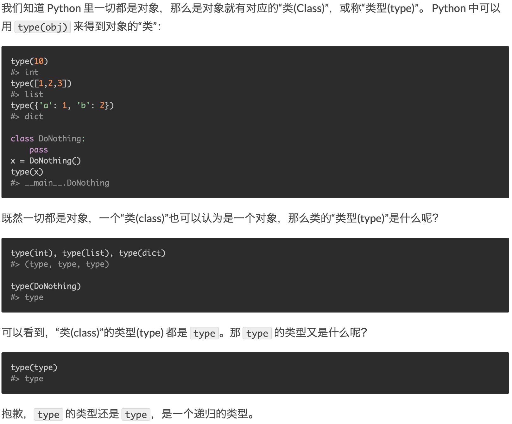
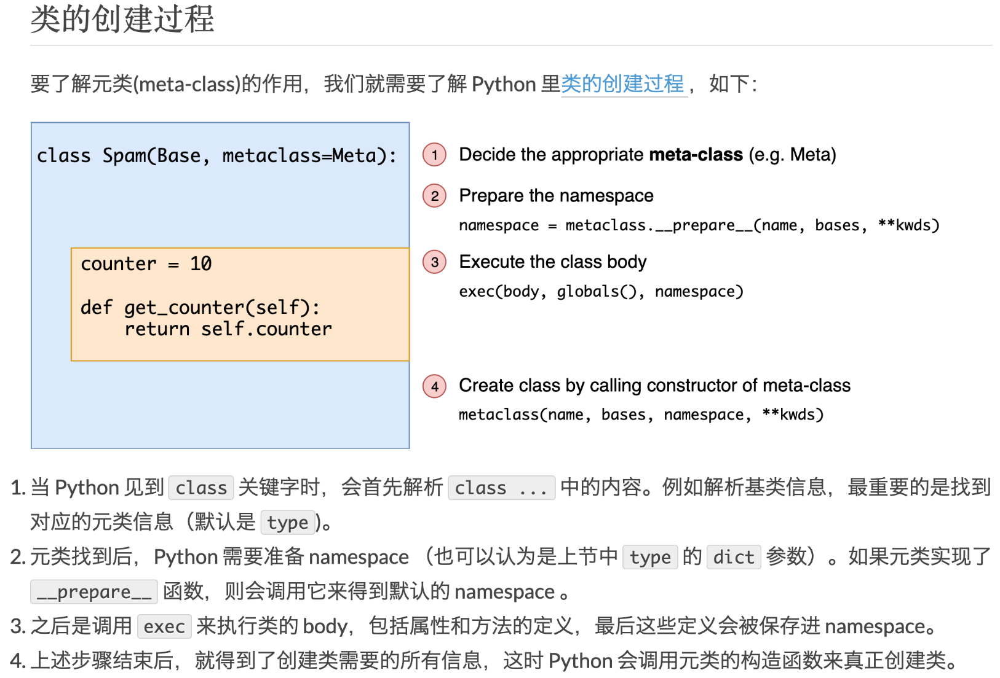

语言本身¶
基础语法¶
启动解释器：
- python -c command [arg] … ，这种方法可以在 命令行 执行 Python 语句，类似于 shell 中的 -c 选项。
- python -m module [arg] … ，有一些 Python 模块也可以当作脚本使用，这类似在命令行中键入完整的路径名执行 模块 源文件一样。
- python -i file.py 运行脚本然后进入交互模式，交互中会保留file.py中的符号。
- 为了减少一个编译模块的大小，你可以在 Python 命令行中使用 -O 或者 -OO。-O 参数删除了断言语句，-OO 参数删除了断言语句和 __doc__ 字符串。
广泛应用的else:
基础控制语句中 else 不仅仅可以跟 if 一起使用，还可以跟 for, while, try 一同使用：:
while n < 10: print(n) else: print("else", n) for i in range(5): print(i) else: print("else", i) try: raise Exception("ERROR") except Exception as e: pass else: print("Else")
比较操作可以传递
例如 a < b == c 审核是否 a 小于 b 并且 b 等于 c。
输出：
- rpr() ： 适合于解释器的字符串表示，一般可以从这个字符串重构对象，即 eval(rpr(a)) == a
- str()： 合适于人阅读的字符串表示。某对象没有适于人阅读的解释形式的话，str() 会返回与 repr() 等同的值。
- str.format()： ‘We are the {} who say “{}!”’.format(‘knights’, ‘Ni’)
switch语句
python中没有switch语句，取代的方案是使用字典。:
s = {1: call_a(), 2: call_b()} s[case]()
字符串¶
字符串类型：
- 普通字符串：使用单引号或双引号包括起来；
- 多行字符串：使用三引号 ‘’’ 或 “”” 包括起来；
- 原始字符串： r’myname’ 没有换行，而 ‘my**\n**ame’ 包括一个换行；
- 文档字符串：紧跟在符号定义后面的多行字符串。第一行应该是关于对象用途的简介，并且如果文档字符串有多行，第二行应该空出来，与接下来的详细描述明确分隔。
字符串操作：
- 相邻的两个字符串文本自动连接在一起： ‘Py’ ‘thon’ => ‘Python’；
- 字符串切片： s[a:b] 在数学符号上的意义等同于 s[a, b)；
format操作
“{:.2f}”.format(3.1415926) –> 3.14
tuple & list & dict¶
tuple: ()
list: []
dict: {}
分别对应小括号、中括号、大括号。
tuple 实际上是由逗号来组成的，而不是圆括号，圆括号只是为了书写漂亮。
这就是下面两个奇怪行为的原因：
- return 1,2,3 返回的是一个元组；
- 单个元素的元组要这么写， a = (1, )
清空list
直接清空一个list的方法是del l[:]，一般偷懒用的l = []在函数内部会是个陷阱，因为函数名的符号指向着这个list，所以它的内存不会被释放。
函数¶
理解Python中的参数:
参数的顺序是: 位置参数、任意位置参数、关键字参数、任意关键字参数。
所以： non-keyword arg after keyword arg 是错误语法，会引发 SyntaxError
且：如果有默认参数，一定出现在相应位置的最后。
*和**在参数中的应用:
*和**用在形参时，是可变参数：
问题：
Python的函数定义中有两种特殊的情况，即出现*，**的形式。
如：def myfun1(username, *keys)或def myfun2(username, **keys)等。
解释：
* 用来传递任意个无名字参数，这些参数会一个Tuple的形式访问。
用来处理传递**任意个有名字的参数，这些参数用dict来访问。
应用：
######################### # “*” 的应用 ######################### >>> def fun1(*keys): ... print "keys type=%s" % type(keys) ... print "keys=%s" % str(keys) ... for i in range(0, len(keys)): ... print "keys[" + str(i) + "]=%s" % str(keys[i]) ... >>> fun1(2,3,4,5) 输出以下结果： keys type= keys=(2, 3, 4, 5) keys[0]=2 keys[1]=3 keys[2]=4 keys[3]=5 ######################### # “**” 的应用 ######################### >>> def fun2(**keys): ... print "keys type=%s" % type(keys) ... print "keys=%s" % str(keys) ... print "name=%s" % str(keys['name']) ... >>> >>> fun2(name="vp", age=19) 输出以下结果： keys type= keys={'age': 19, 'name': 'vp'} name=vp \*和**用在\ **实参**\ 中时，是\ **解包符号**\ ： a={'a':1, 'b':3} "{a}, {b}".format(**a)
函数注解
是关于用户自定义的函数的完全可选的、随意的元数据信息。无论 Python 本身或者标准库中都没有使用函数注解；:
def int_add(x:int, y:int) -> int: return x+y
默认值只在函数定义时绑定一次，这是个很大的坑！
注意这里的关键词：在定义时绑定、且只绑定一次。
函数默认参数值只被赋值一次。这使得当默认值是可变对象时会有所不同，比如列表、字典或者大多数类的实例。这是一个坑！
def f(a, L=[]): L.append(a) return L print(f(1)) print(f(2)) print(f(3)) 这将输出: [1] [1, 2] [1, 2, 3] 如果你不想让默认值在后续调用中累积，你可以像下面一样定义函数: def f(a, L=None): if L is None: L = [] L.append(a) return L
区分定义时绑定和运行时绑定
lambda 函数中的自由变量是运行时进行绑定的，也就是说python中的闭包的变量是在运行时进行绑定的；
而函数默认参数是在定义时绑定的；
偏函数
functools.partial() 是一个非常好用的偏函数工具，可以固定一些参数从而形成一个新的函数。
迭代器¶
迭代器协议：
首先用iter()调用 __iter__() 。该函数返回一个定义了 __next__() 方法的迭代器对象，用内建的 next() 函数调用 __next__() 方法在容器中逐一访问元素。没有后续的元素时， __next__() 抛出一个 StopIteration 异常。
反向迭代
内建函数 reversed() 可以实现反向迭代，但只有在待处理的对象拥有可确定的大小，或者实现了 __reversed()__ 特殊方法时，才能奏效。
以索引-值对的形式迭代：
这是非常常见的需求，尤其是从C系转过来的程序员，内建的 enumerate() 可以漂亮的解决
for idx, val in enumerate(my_list):
print(idx, val)
切片操作：
迭代器和生成器都无法执行普通的切片操作，因为长度是未知的。可以通过 itertools.islice() 来曲线实现。
很符合逻辑的是 itertools.islice() 能工作的原理是正常执行了迭代，并丢弃了不需要的元素。
同时， itertools.dropwhile() 也是一个方便的函数，它丢弃前面几个不符合要求的元素。
itertools 模块：
如上所述， itertools.islice(), itertools.dropwhile() 都非常有用。
还有很多其它的有用的功能，如排列 permutations() 组合 combinations() 等等，基本上，如果面对任何复杂的迭代问题，itertools 都能找到合理的解决方案。
迭代多个序列：
很明显用 zip() 来解决，注意 zip() 返回的序列与最短输入序列长度相同。
itertools.zip_longest() 可以替代为返回与最长输入序列长度相同的序列，很明显空缺的元素为None。
如果想序列的对多个容器进行水平迭代，可以使用 itertools.chain() ，非常漂亮。
哨兵迭代：
内建函数 iter() 可以接受一个无参的可调用对象和一个哨兵，它会创建迭代器，重复调用可调用对象直接它返回哨兵为止。这也是一个常见的语法糖。
for v in iter(lambda: s.receive(), “END”)
print(v)
一直调用 s.receive() 并输出，直到它返回 END 为止。
生成器¶
生成器：
生成器最核心的就是理解：它不用预先产生完整的迭代对象，从而节省内存。
它的工作原理是在每次yield时，把当前的运行堆栈保存起来，在下次迭代中再恢复这个堆栈。
生成器常用函数直接实现，但是生成器也可以轻易的实现为一个类，把生成器函数的代码放到 __iter__() 方法中即可。
yield from 语法糖:
yield from x 可以视为下面的展开
for v in x:
yield v
用 yield from 明显更紧凑更清晰。
异常¶
基础异常语法:
try:
f = open('abc.csv')
raise Exception("ERROR")
except Exception as e:
print(e)
else:
print("no exception")
f.close()
finally:
print("executing finally clause")
with 语句：
with 用在提供了预定义清理行为的对象上，逻辑上可以理解为try…finally的简写:
- with open(“myfile.txt”) as f:
- for line in f:
- print(line)
库目录查找¶
python模块导入时按优先级高低的搜索路径如下：
- 程序主目录，执行程序则包含执行代码文件的目录，如：python sub/a.py，交互模式(如输入python)下为当前工作目录
- PYTHONPATH中的目录
- python安装目录,UNIX下，默认路径一般为/usr/local/lib/python3.5/site-packages
- 3.x 中还会加载 site-packages 目录下的 *.pth 文件内容，这个文件一行一个目录。
这4项，共同构成了sys.path。模块存储路径在sys.path 里面就可以import。 由于搜索路径有先后顺序，所以前面同名的模块容易“挡住”后面的模块。程序运行期间，sys.path 中还可以动态修改。
各种修改sys.path的方法区别在于：
- 动态修改sys.path列表：动态添加，灵活但是每一个脚本都需要把sys.path加上；
- site-packages & *.pth ：为某一个版本的python固定添加上搜索目录；
- PYTHONPATH：跨所有版本都会添加；
Python中有各种模块的目录，大致可以这么理解
- 标准库一般直接会在：/usr/lib/pythonX.Y/
- 使用系统软件管理器安装的包会在：/usr/lib/pythonX.Y/site-packages/
- 使用easy_install或pip安装的包会在：/usr/local/lib/pythonX.Y/site-packages/
- 非root使用安装的包会在：~/.local/lib/pythonX.Y/site-packages/
- 为什么会有dist-packages：
- 在Debian系列的Linux上，系统软件管理器安装的包在 dist-packages 而不是采用 site-packages 目录。这是为了减少系统自带python 和 你手动安装的python 之间的冲突，只是一种命名技巧。
其实最关键的是知道：模块的安装路径一定要在 sys.path 这个List中，才能在脚本中可以正常地 import 进来。
包和模块¶
from mypackage import *
导入的是 __init__.py 中的 __ALL__ 变量里指出的所有符号。如果没有 __ALL__ 变量，则默认导入所有不以下划线开头的符号
import mypackage
导入 mypackage 目录下的 __init__.py，所谓的导入就是把这个文件执行一遍。所以，在这个文件中显式引入的符号也会被放到 mypackage 命名空间下。
- 示例::
- mypackage/__init__.py from extend_package import extend_name # 导入了外部符号
在其它文件中就可以访问到这个符号
import a/b/c
会依次执行 a/__init.py, a/b/__init__.py, a/b/c/__init__.py
import中的 . 和 .. 语法
from . import a ：从当前目录查找 a
from ..a import b ：从../a 目录查找 b
命名空间包
一种特殊的包，设计出来在大型项目中合并不同目录下的代码，并合并在统一的命名空间之下。
关键之处在于统一的命名空间的顶层目录中不包含 __init__.py 文件。导入这样的包时，解析器会创建一个列表，并把所有恰好包含在这个包名的目录（通过sys.path来控制）都囊括在内。
用 python 执行目录或 zip 文件
1：python mydir 时，实际上执行的是 python mydir/__main__.py
2：zip文件可以视为一个目录来处理
sys.path
通过 PYTHONPATH 环境变量和 .pth 文件影响 sys.path
.pth文件需放在某一个 site-packages 目录中，site-packages 目录通常是第三方模块和包的安装目录
一般有一个用户级的安装目录，一般在 .local/lib/python3.5/site-packages
通过字符串加载
当包名或模块包是通过字符串给出时，可以使用 importlib.import_module()函数来手动导入这个模块
import 钩子机制
import 有强大的钩子机制，可以细致的自定义 import 时的各种行为。比如实现自动从远程加载，加载时自动打补丁等等。
发布包
使用标准库的 distutils 库来创建可发布的包非常简单，一般只需要 setup.py 和 MANIFEST.in 文件即可。
发布涉及到 C 语言扩展的包时，就会比较复杂了，因为要编译C代码。
模块也可以包含可执行语句。这些语句一般用来初始化模块。他们仅在 第一次 被导入的地方执行一次。
包内引用
如果包中使用了子包结构，可以按绝对位置从相邻的包中引入子模块。例如，如果 sound.filters.vocoder 包需要使用 sound.effects 包中的 echo 模块，它可以 from sound.Effects import echo。
你可以用这样的形式 from module import name 来写显式的相对位置导入。那些显式相对导入用点号标明关联导入当前和上级包。以 surround 模块为例，你可以这样用:
from . import echo from .. import formats from ..filters import equalizer需要注意的是显式或隐式相对位置导入都基于当前模块的命名。因为主模块的名字总是 “__main__”，Python 应用程序的主模块应该总是用绝对导入。
site-packages目录下四种包的形式:
- 1. | site-packages/pylab.py | 这种是最好理解的, 因为单个.py文件就可以作为module被引用.
- 2. | site-packages/toolz | site-packages/toolz-0.8.0-py2.7.egg-info | 这种包有两个目录, 一个目录以包名命名, 因为含有__init__.py的目录, 可以作为module被引用. | 另一个egg-info目录是一些metadata, 没什么大用, 有些包也没有这个目录.
- 3. | site-packages/fasttext-0.7.6-py2.7-Linux-x86_64.egg | 单独一个.egg文件. 这种包是把模块都打进了一个egg压缩包里. 这个压缩包可以视为一个目录, 模块文件在这里: site-packages/fasttext-0.7.6-py2.7-linux-x86_64.egg/fasttext
- 4. | site-packages/titlectr-0.1-py2.7.egg | 虽然文件名跟3相同, 但是这是一个目录, 可以视为是3解压后的样子. 模块文件在这个目录里: site-packages/titlectr
我们知道, site-packages是在模块搜索的path(sys.path)里的, 所以1和2这两种存放包的方式, 可以直接被搜索到, 可以直接import, 但是3和4这两种方式, 包是在子目录中, 所以无法直接import. 于是安装的时候, 安装工具会将.egg目录加入到path中(.pth文件). 比如将site-packages/fasttext-0.7.6-py2.7-linux-x86_64.egg和site-packages/titlectr-0.1-py2.7.egg写入到site-packages/easy_install.pth中. 也可以写在其他的site-packages/*.pth中, 比如给每个package单独建一个.pth文件.
Python有两个setup工具, 一个是setuptools(from setuptools import setup), 另一个是distutil(from distutil import setup).
- setuptools安装的包, 会形如3和4的样子. 这个工具有完善的打egg包的功能,
- 也倾向于把模块的功能部分和metadata打成一个整体(egg), 方便管理. 使用python setup.py bdist_egg命令, 可以将module打成egg包, 方便部署.
- distutil会直接把源码包复制到site-pacakages下，
- 并创建一个和模块并列的metadata. 如果package中有个大文件比如字典(当然很不推荐将大字典封装作为package的一部分, 一般外挂), 使用setuptools, 会耗费极大的时间在打包egg上, 而distutil可以直接拷贝安装.
- 除此之外, wheel是一种新的格式. 更类似于java的jar包. python setup.py
- bdist_wheel可以打包成wheel包.
源码、Eggs、Wheel 三种常见的 python 包格式
源码包就不用说了，tar.gz 或类似的压缩包，安装的时候直接copy到site-packages目录下就行
Eggs，由setuptools引入的一种文件格式，setuptools可以创建，识别，解析并安装这种格式。本质就是一种压缩包，有句话“Eggs are to Pythons as Jars are to Java”，跟Java中的Jar包一样。
Wheel 本质是一个zip包，只是使用了whl扩展名。是一种比egg更新更好的打包格式，它的出现就是为了替代Eggs的。可以理解为一种更好的Jar包。
修饰器¶
我觉得，关于python的函数修饰器，最关键的在于理解以下两点：
1：
def decorator(func): def inner(\*args,\*\*kwargs): print "Before"**\ +func.__name_\_ func(\*args,**kwargs) print "After"**\ +func.__name_\_ return inner @decorator def f(a, b, c): pass意味着 f = decorator(f)，f 这个标识符实际上指向了一个另外的函数（decorator的内部函数inner），直接print f.__name__就可以看出来。
所以说，函数修饰器的本质就是“标识符的替换”！这种标识符的替换并不仅限于函数修饰，甚至可以近似理解为是“C语言中的宏替换”。
理解了 f 这个标识符被替换了之后，就明白 a,b,c参数会被传递到哪里了，肯定是inner啊，因为 f这个标识符被替换为了inner，视为 f(a,b,c)===inner(a,b,c)。
2：
def with_arg_decorator(desc_kwargs): def real_decorator(func): def inner(args,kwargs): print "%scall%sbegin"\ %(desc_kwargs['caller'],func.__name__) func(args,kwargs) print "%scall%send"\ %(desc_kwargs['caller'],func.__name__) return inner return real_decorator @with_arg_decorator(caller=\ "TCQ") pass带参数的修饰器关键在于理解这里实际上这已经发生了一次函数调用,因为已经有了一个()，即每个()意味着一次函数调用。 with_arg_decorator(caller=”TCQ”)返回了real_decorator,real_decorator就已经是一个无参数的普通修饰器了。再使用 @real_decorator应用到f2上。知道内部机制就彻底明白了！
函数式编程¶
函数式的风格通常被认为有如下优点：
- 逻辑可证
- 模块化
- 组件化
- 易于调试
- 易于测试
- 更高的生产率
支持函数式编程的语言通常具有如下特征，大量使用这些特征的代码即可被认为是函数式的：
- 函数是一等公民
- 匿名函数(lambda) ；
- 封装控制结构的内置模板函数 （如map, reduce, zip, filter等等）；
- 闭包(closure) ；
- 内置的不可变数据结构 （如tuple）；
- 递归 ；
常用的函数式内建函数：
- map(function, iterable, …) ：为每一次迭代应用一个函数
- reduce(function, iterable[, initializer]) ：归约，将所有的迭代归约为一个最终的结果
- filter(function, iterable) ：过滤
- zip(iterable1, iterable2, …)：打包。返回一个列表，每个元素都是一个元组
- sorted(iterable, function)：排序
列表解析与函数式编程¶
列表解析可以替代绝大多数需要用到map和filter的场合，可能正因为此，著名的静态检查工具pylint将map和filter的使用列为了警告。
[ x+1 for x in lst if x > 0] 这基本能全部替代map和filter的。
而且，“生成器表达式”还能更好的迭代巨大的数组，更好的利用内存：
(x+1 for x in lst) #生成器表达式，返回迭代器。外部的括号可在用于参数时省略。
[x+1 for x in lst] #列表解析，返回list
当包含2个以上的推导时，会从左到右来解析，这与直觉是相反的：
[x for row in matrix for x in row] # 这是正确写法
[STRIKEOUT:[x for x in row for row in matrix] # 这是我的直觉写法，但是是错的！]
其它：
- 使用 functools.partial() 来方便的创建偏函数，如
- functools.partial(int, base=2) 创建一个二进制转换的偏函数。
- sorted() 也是函数式编程中常用的辅助函数。
- pypi上有一个名为functional的模块，除了这些内建函数外，还额外提供了更多的有意思的函数。
调试与测试¶
快速的调试有几种方法：
print 大法当然是最基本的。
- 使用 -i 参数进行交互式调试， python -i a.py
时，如果发生异常，那么就会在异常处中断并进入交互模式，这时可以查看一下当前的各种变量。
- 使用 pdb 进行交互式调试，在需要断点的行写下 import pdb;
pdb.set_trace()。这便会在这点停下，并可以使用一些高级命令查看当前变量。
- bt 打印堆栈
- up 向上移一层，查看更高级次的函数的变量值
- down 向下移一层
- step 步进，会进入函数
- next 步进，不会进入函数，把函数当成一行
- return 继续运行到return语句
- continue 继续运行到下一个断点
类与面向对象¶
Python 的类机制通过最小的新语法和语义在语言中实现了类。它是 C++ 或者 Modula-3 语言中类机制的混合。
用 C++ 术语来讲，所有的类成员（包括数据成员）都是公有（ public ）的（其它情况见下文 私有变量），所有的成员函数都是虚（ virtual ）的。
命名空间
从命名到对象的映射。当前命名空间主要是通过 Python 字典实现的，不过通常不关心具体的实现方式（除非出于性能考虑），以后也有可能会改变其实现方式。
nolocal & global
如果一个命名声明为全局的，那么对它的所有引用和赋值会直接搜索包含这个模块全局命名的作用域。如果要重新绑定最里层作用域之外的变量，可以使用 nonlocal 语句；如果不声明为 nonlocal，这些变量将是只读的（对这样的变量赋值会在最里面的作用域创建一个新的局部变量，外部具有相同命名的那个变量不会改变）。
global 语句用以指明某个特定的变量为全局作用域，并重新绑定它。
nonlocal 语句用以指明某个特定的变量为封闭作用域，并重新绑定它。
__new__ () & __init__()
__new__() 一般生成一个没有初始状态的对象
__init__() 一般生成一个带初始状态的对象
__str__() & __repr__() & __format__()
__str__()返回的是“字符串表示”；
__repr__()返回的是“代码表示”，即： eval(repr(obj)) == obj；
__format__()是留给 ” xxx {:abc}”.format(d) 的钩子；
方法的工作原理
x.f(…) 相当于 MyClass.f(x, …)
引用非数据属性的实例属性时，会搜索它的类。如果这个命名确认为一个有效的函数对象类属性，就会将实例对象和函数对象封装进一个抽象对象：这就是方法对象。以一个参数列表调用方法对象时，它被重新拆封，用实例对象和原始的参数列表构造一个新的参数列表，然后函数对象调用这个新的参数列表。
下面这段很长的话，就是对上面那个简短语句转换的描述。
命名约定：
大写方法名称的首字母
使用一个唯一的小字符串（也许只是一个下划线）作为数据属性名称的前缀
方法使用动词而数据属性使用名词。
Python 有两个用于继承的函数：
- 函数 isinstance() 用于检查实例类型： isinstance(obj, int) 只有在
- obj.__class__ 是 int 或其它从 int 继承的类型
- 函数 issubclass() 用于检查类继承： issubclass(bool, int) 为
- True，因为 bool 是 int 的子类。然而， issubclass(float, int) 为 False，因为 float 不是 int 的子类。
私有变量
以一个下划线开头的命名（例如 _spam ）会被处理为 API 的非公开部分（无论它是一个函数、方法或数据成员）。它会被视为一个实现细节，无需公开。
前面至少两个下划线，后面至多一个下划线（形如 __spam ）的标识符，会应用name mangling （命名编码）替代为 _classname__spam 。
一个下划线类型于protected，二个下划线类似于private。
二个下划线的 name mangling 也不能绝对私有变量，实际上他是为了避免子类无意中覆盖掉父类中的符号。
新式类与旧式类¶
在2.x中才有新式类与旧式类，在3.x中只有新式类。
Python 2.x中默认都是经典类，只有显式继承了object才是新式类
Python 3.x中默认都是新式类，不必显式的继承object
新式类与经典类的差别并不大，所以在实际中很可能感觉不到差别。它们的区别在于：
- 首先，写法不一样：
class A:passclass B(object):pass
- 在多继承中搜索MRO时，新式类采用广度优先搜索，而旧式类是采用深度优先搜索。
- 新式类更符合OOP编程思想，统一了python中的类型机制（不再区别类和类型）。
新式类对象可以直接通过__class__属性获取自身类型:type
- 新式类增加了__slots__内置属性, 可以把实例属性的种类锁定到__slots__规定的范围之中。 | class A(object):
__slots__ = (‘name’, ‘age’)
a = A()
a.name1 = “a”
AttributeError: ‘A’ object has no attribute ‘name1’
经典类__slots__ 属性没用，A是新式类添加了__slots__ 属性,所以只允许添加 name age，所以a.name是会出错的
- 新式类增加了__getattribute__方法，每次通过实例访问属性，都会经过__getattribute__函数。
类的各种属性和方法的使用与区别¶
代码示例：
classA(object):
instance_and_class_prop=1
class_prop=1
_private_instance_prop1=2#君子协议,只是告诉别人这是私有属性，外部依然可以访问更改
__private_instance_prop2=3#稍微混淆了一下,外部不可通过instancename.propertyname来访问或者更改,实际将其转化为了_classname__propertyname
def __init__(self):
self.instance_and_class_prop=100
self.instance_prop=101
def foo(self,x):
#类实例方法
print “executingfoo(%s,%s)”%(self,x)
@classmethod
def class_foo(cls,x):
#类方法
print “executingclass_foo(%s,%s)”%(cls,x)
@staticmethod
def static_foo(x):
#静态方法
print “executingstatic_foo(%s)”%x
a=A()
print a.instance_and_class_prop#instance.propname优先选择实例属性
print A.instance_and_class_prop#classname.propname始终指向类属性
print a.class_prop#instance.propname找不到实例属性时就指向类属性
print A.class_prop#classname.propname始终指向类属性
print a.instance_prop#instance.propname优先选择实例属性
try:
print A.instance_prop#classname.propname始终指向类属性,无法找到实例属性,抛出AttrbuteError异常
except AttributeError:
pass
print A._private_instance_prop1#一般不要像这样打破君子协议
print A._A__private_instance_prop2#强制访问,更不好了
a.foo(1)#print:executingfoo(<__main__.Aobjectat0xb77d67ec>,1)
a.class_foo(1)#executingclass_foo(<class’__main__.A’>,1)
A.class_foo(1)#executingclass_foo(<class’__main__.A’>,1)
a.static_foo(1)#executingstatic_foo(1)
A.static_foo(1)#executingstatic_foo(1)
实例属性、类属性、私有属性 的区别：
1：实例属性：
最好在__init__(self,…)中初始化
内部调用时都需要加上self.
外部调用时用instancename.propertyname
2:类属性：
在__init__()外初始化
在内部用classname.类属性名调用
外部既可以用classname.类属性名又可以用instancename.类属性名来调用
3：私有属性：
1）：单下划线_开头：只是告诉别人这是私有属性，外部依然可以访问更改
2）：双下划线__开头：外部不可通过instancename.propertyname来访问或者更改，实际将其转化为了_classname__propertyname
实例方法、类方法、静态方法 的区别：
- 类方法和静态方法都可以被类和类实例调用，类实例方法仅可以被类实例调用
- 因此，类方法可以实现类级别的多态，就是因为他有个cls参数可以区分当前不同的类，从而实现类级别的多态。
- 静态方法没有cls参数，无法做到类级别的多态。
- 类方法的隐含调用参数是类，而类实例方法的隐含调用参数是类的实例，静态方法没有隐含调用参数。
- 类方法和静态方法在低版本的python中都是用外部函数来实现的，引入了这2个函数修饰器后让所有与类相关的代码都集中到了类的内部，形式上更漂亮了而已。
super() & MRO¶
__MRO__ 定义了多重继承，菱形继承时类之间的顺序，通过 super() 来调用可以确保每个祖先类只被调用一次。
python 2.2 开始，就已经提供了 super() 函数，只是在python3中可以不带参数的调用 super()了。
super(MyClass, self).__init__() # python 2.2+
super().__init__() # python 3+，默认参数是 super(__class__, self).__init__()
property¶
通过 @prperty 修饰符实现。
class MyClass(object):
def __init__(self):
self.v = 0
@property
def value(self):
return self.v
@value.setter
def value(self, v):
if 0 <= v <= 100:
self.v = v
m = MyClass()
m.value = 99
print(m.value)
Mixin¶
Mixin 是不是可以视为C++中的抽象类？
Mixin与interface最大的区别在于它是包括实现的，而interface仅仅包含声明。
Mixin强调的是 I Can，而interface强调的是 I Am。
使用Mixin类实现多重继承要非常小心
- 首先它必须表示某一种功能，而不是某个物品，如同Java中的Runnable，Callable等
- 其次它必须责任单一，如果有多个功能，那就写多个Mixin类
- 然后，它不依赖于子类的实现
- 最后，子类即便没有继承这个Mixin类，也照样可以工作，就是缺少了某个功能。（比如飞机照样可以载客，就是不能飞了^_^）
描述符¶
class Grade(object):
def __get__(*args, **kwargs):
pass
def __set__(*args, **kwargs):
pass
class Exam(object):
math_grade = Grade()
writing_grade = Grade()
原理：
在为访问属性时，python会对代码进行转译：
exam = Exam()
exam.math_grade = 40
print(exam.math_grade)
会转译成：
Exam.__dict__[‘math_grade’].__set__(exam, 40)
print(Exam.__dict__[‘math_grade’].__get__(exam, Exam)
背后的逻辑是：
如果 Exam 的实例 exam 没有定义math_grade属性，那么就会在Exam类中查找同名的类属性。这个类属性，如果是实现了__get__, __set__的对象，那么python解析器就会认定此对象尊从描述符协议。
元编程¶
元类 Metaclass¶
https://lotabout.me/2018/Understanding-Python-MetaClass/ 这篇文章讲的非常清楚，一看就懂。
知道了《类也是对象，3的类型是int，int的类型是type》 和 《Python类的创建过程》之后，就彻底明白了元类，再也不神秘了。
首先明白几个基本概念：

对象的类型叫作类(class)，类的类型就称作元类 meta-class。也就是说，继承自type的类就叫元类。
再清楚类的创建过程：
所有的类都是通过 type(name, bases, dict) 函数来创建的！
class Base:
counter = 10
class Derived(Base):
def get_counter(self):
return self.counter
x = Derived()
x.get_counter()
#> 10
我们可以调用 type(…) 来动态创建这两个类，完全等价：
Base = type(‘Base’, (), {‘counter’: 10})
Derived = type(‘Derived’, (Base,), dict(get_counter=lambda self: self.counter))
x = Derived()
x.get_counter()
#> 10
原理就是：Python 在遇到 class … 关键字时会一步步解析类的内容，最终调用 type(…) （准确说是指定的元类）的构造函数来创建类。

元类的常见的三个应用：
- 验证子类。比如强制子类实现某个方法，在创建时就报错，而不是运行进报错。
- 注册子类。可以知道哪些类继承了当前类。
- 注解类的属性。
其它¶
python2 vs python3¶
python2中的闭包缺陷与py3中的nolocal关键字¶
py2中的闭包无法修改外部变量，只能读取外部变量，这是python2的一个硬伤。任何试图修改外部变量都将声明一个新的同名内部变量，并覆盖相应的外部变量。
def counter():
num = 0
def add_one():
num += 1
print(num)
return add_one
con = counter()
con()
这段代码在2.x中运行会报错: UnboundLocalError: local variable ‘num’ referenced before assignment.
python2中要修改外部变量只能使用global来引用全局变量，这当然是很不好的风格。当然还有一些Trick，比如使用容器对象，但是这样代码可读性低，不友好。
所以，在python3中引入了nolocal关键字来引用外部变量，解决了这个问题。至此，python3中的闭包才是完备的了！
def counter():
num = 0
def add_one():
nonlocal num
num += 1
print(num)
return add_one
con = counter()
con()
完全正常运行！
Google Python Style¶
Google Python 的编码风格相对于C++真是简洁太多了，python的简洁性和一致性真是好。
PEP8：必须符合 PEP8 规范，使用 pylint + yapf
编码：使用 Unix \n 风格的换行 + UTF8 编码 + 4空格缩进
长度：折行以确保其不会超过 79 个字符，超长的不要用反斜杠连行，而是使用括号连接。
空行：顶级定义空2行， 其它情况空1行
空格：把空格放到操作符两边，以及逗号后面。不滥用空格。
注释：
每个文件包括一个统一的头
可能的话注释独占一行，同行注释至少要在代码后空2个空格。
TODO 注释是个好习惯，但是记得在TODO后写上自己的名字。
规范的注释格式：（Summary -> Detail -> Sections 三步曲）:
"""Summary Longer information.... Detail information.... (Attributes for class; Args, Returns, Raise for function) Attributes: likes_spam: A boolean indicating if we like SPAM or not. eggs: An integer count of the eggs we have laid. """
命名：
- 类名用ClassName驼峰式，const常量全大写，其余全小写+下划线。
- 枚举始终加 Enum后缀；异常始终加Exception后缀；mixin始终加Mixin后缀。
类：
- 显式继承自object，可以同时适用python2和python3
- 单下划线(_)表示protected；双下划线(__)表示private。
限制：
- 使用列表推导式（或生成式推导式）替代 map, reduce, filter。
- 不要使用那些威力过大的奇技淫巧。
python 版本变迁¶
py2 vs py3¶
Python2.x与3.x版本区别
Python的3.0版本，常被称为Python 3000，或简称Py3k。相对于Python的早期版本，这是一个较大的升级。
为了不带入过多的累赘，Python 3.0在设计的时候没有考虑向下相容。
许多针对早期Python版本设计的程式都无法在Python 3.0上正常执行。
为了照顾现有程式，Python 2.6作为一个过渡版本，基本使用了Python 2.x的语法和库，同时考虑了向Python 3.0的迁移，允许使用部分Python 3.0的语法与函数。
新的Python程式建议使用Python 3.0版本的语法。
除非执行环境无法安装Python 3.0或者程式本身使用了不支援Python 3.0的第三方库。目前不支援Python 3.0的第三方库有Twisted, py2exe, PIL等。
大多数第三方库都正在努力地相容Python 3.0版本。即使无法立即使用Python 3.0，也建议编写相容Python 3.0版本的程式，然后使用Python 2.6, Python 2.7来执行。
Python 3.0的变化主要在以下几个方面:
print 函数
print语句没有了，取而代之的是print()函数。 Python 2.6与Python 2.7部分地支持这种形式的print语法。在Python 2.6与Python 2.7里面，以下三种形式是等价的：
print “fish”print (“fish”) #注意print后面有个空格print(“fish”) #print()不能带有任何其它参数然而，Python 2.6实际已经支持新的print()语法：
from __future__ import print_functionprint(“fish”, “panda”, sep=’, ‘)Unicode
Python 2 有 ASCII str() 类型，unicode() 是单独的，不是 byte 类型。
现在， 在 Python 3，我们最终有了 Unicode (utf-8) 字符串，以及一个字节类：byte 和 bytearrays。
由于 Python3.X 源码文件默认使用utf-8编码，这就使得以下代码是合法的：
>>> 中国 = ‘china’>>>print(中国)chinaPython 2.x
>>> str = “我爱北京天安门”>>> str‘xe6x88x91xe7x88xb1xe5x8cx97xe4xbaxacxe5xa4xa9xe5xaex89xe9x97xa8’>>> str = u”我爱北京天安门”>>> stru’u6211u7231u5317u4eacu5929u5b89u95e8’Python 3.x
>>> str = “我爱北京天安门”>>> str‘我爱北京天安门’除法运算
Python中的除法较其它语言显得非常高端，有套很复杂的规则。Python中的除法有两个运算符，/和//
首先来说/除法:
在python 2.x中/除法就跟我们熟悉的大多数语言，比如Java啊C啊差不多，整数相除的结果是一个整数，把小数部分完全忽略掉，浮点数除法会保留小数点的部分得到一个浮点数的结果。
在python 3.x中/除法不再这么做了，对于整数之间的相除，结果也会是浮点数。
Python 2.x:
>>> 1 / 20>>> 1.0 / 2.00.5Python 3.x:
>>> 1/20.5而对于//除法，这种除法叫做floor除法，会对除法的结果自动进行一个floor操作，在python 2.x和python 3.x中是一致的。
python 2.x:
>>> -1 // 2-1python 3.x:
>>> -1 // 2-1注意的是并不是舍弃小数部分，而是执行 floor 操作，如果要截取整数部分，那么需要使用 math 模块的 trunc 函数
python 3.x:
>>> import math>>> math.trunc(1 / 2)0>>> math.trunc(-1 / 2)0异常
在 Python 3 中处理异常也轻微的改变了，在 Python 3 中我们现在使用 as 作为关键词。
捕获异常的语法由 except exc, var 改为 except exc as var。
使用语法except (exc1, exc2) as var可以同时捕获多种类别的异常。 Python 2.6已经支持这两种语法。
- 在2.x时代，所有类型的对象都是可以被直接抛出的，在3.x时代，只有继承自BaseException的对象才可以被抛出。
- 2.x raise语句使用逗号将抛出对象类型和参数分开，3.x取消了这种奇葩的写法，直接调用构造函数抛出对象即可。
在2.x时代，异常在代码中除了表示程序错误，还经常做一些普通控制结构应该做的事情，在3.x中可以看出，设计者让异常变的更加专一，只有在错误发生的情况才能去用异常捕获语句来处理。
xrange
在 Python 2 中 xrange() 创建迭代对象的用法是非常流行的。比如： for 循环或者是列表/集合/字典推导式。
这个表现十分像生成器（比如。”惰性求值”）。但是这个 xrange-iterable 是无穷的，意味着你可以无限遍历。
由于它的惰性求值，如果你不得仅仅不遍历它一次，xrange() 函数 比 range() 更快（比如 for 循环）。尽管如此，对比迭代一次，不建议你重复迭代多次，因为生成器每次都从头开始。
在 Python 3 中，range() 是像 xrange() 那样实现以至于一个专门的 xrange() 函数都不再存在（在 Python 3 中 xrange() 会抛出命名异常）。
import timeit
n = 10000def test_range(n):return for i in range(n):passdef test_xrange(n):for i in xrange(n):passPython 2
print ‘Python’, python_version()
print ‘ntiming range()’%timeit test_range(n)print ‘nntiming xrange()’%timeit test_xrange(n)Python 2.7.6
timing range()1000 loops, best of 3: 433 µs per looptiming xrange()1000 loops, best of 3: 350 µs per loopPython 3
print(‘Python’, python_version())
print(‘ntiming range()’)%timeit test_range(n)Python 3.4.1
timing range()1000 loops, best of 3: 520 µs per loopprint(xrange(10))—————————————————————————NameError Traceback (most recent call last)<ipython-input-5-5d8f9b79ea70> in <module>()—-> 1 print(xrange(10))NameError: name ‘xrange’ is not defined
八进制字面量表示
八进制数必须写成0o777，原来的形式0777不能用了；二进制必须写成0b111。
新增了一个bin()函数用于将一个整数转换成二进制字串。 Python 2.6已经支持这两种语法。
在Python 3.x中，表示八进制字面量的方式只有一种，就是0o1000。
python 2.x
>>> 0o1000512>>> 01000512python 3.x
>>> 01000File “<stdin>”, line 101000^SyntaxError: invalid token>>> 0o1000512不等运算符
Python 2.x中不等于有两种写法 != 和 <>
Python 3.x中去掉了<>, 只有!=一种写法，还好，我从来没有使用<>的习惯
去掉了repr表达式``
Python 2.x 中反引号``相当于repr函数的作用
Python 3.x 中去掉了``这种写法，只允许使用repr函数，这样做的目的是为了使代码看上去更清晰么？不过我感觉用repr的机会很少，一般只在debug的时候才用，多数时候还是用str函数来用字符串描述对象。
def sendMail(from_: str, to: str, title: str, body: str) -> bool:pass多个模块被改名（根据PEP8）
StringIO模块现在被合并到新的io模组内。 new, md5, gopherlib等模块被删除。 Python 2.6已经支援新的io模组。
httplib, BaseHTTPServer, CGIHTTPServer, SimpleHTTPServer, Cookie, cookielib被合并到http包内。
取消了exec语句，只剩下exec()函数。 Python 2.6已经支援exec()函数。
5.数据类型
1）Py3.X去除了long类型，现在只有一种整型——int，但它的行为就像2.X版本的long
2）新增了bytes类型，对应于2.X版本的八位串，定义一个bytes字面量的方法如下：
>>> b = b’china’>>> type(b)<type ‘bytes’>str 对象和 bytes 对象可以使用 .encode() (str -> bytes) 或 .decode() (bytes -> str)方法相互转化。
>>> s = b.decode()>>> s‘china’>>> b1 = s.encode()>>> b1b’china’3）dict的.keys()、.items 和.values()方法返回迭代器，而之前的iterkeys()等函数都被废弃。同时去掉的还有 dict.has_key()，用 in替代它吧 。
打开文件 原：file( ….. )或open(…..)改为只能用open(…..)从键盘录入一个字符串原:raw_input( “提示信息” )改为:input( “提示信息” )在python2.x中raw_input()和input( )，两个函数都存在，其中区别为：
raw_input()—将所有输入作为字符串看待，返回字符串类型
- input()—–只能接收”数字”的输入，在对待纯数字输入时具有自己的特性，它返回所输入的数字的类型（int, float ） | 在python3.x中raw_input()和input( )进行了整合，去除了raw_input()，仅保留了input()函数，其接收任意任性输入，将所有输入默认为字符串处理，并返回字符串类型。
map、filter 和 reduce 这三个函数号称是函数式编程的代表。在 Python3.x 和 Python2.x 中也有了很大的差异。首先我们先简单的在 Python2.x 的交互下输入 map 和 filter,看到它们两者的类型是 built-in function(内置函数):>>> map<built-in function map>>>> filter<built-in function filter>>>>它们输出的结果类型都是列表:>>> map(lambda x:x 2, [1,2,3])[2, 4, 6]>>> filter(lambda x:x %2 ==0,range(10))[0, 2, 4, 6, 8]>>>但是在Python 3.x中它们却不是这个样子了：>>> map<class ‘map’>>>> map(print,[1,2,3])<map object at 0x10d8bd400>>>> filter<class ‘filter’>>>> filter(lambda x:x % 2 == 0, range(10))<filter object at 0x10d8bd3c8>>>>首先它们从函数变成了类，其次，它们的返回结果也从当初的列表成了一个可迭代的对象, 我们尝试用 next 函数来进行手工迭代:>>> f =filter(lambda x:x %2 ==0, range(10))>>> next(f)0>>> next(f)2>>> next(f)4>>> next(f)6>>>对于比较高端的 reduce 函数，它在 Python 3.x 中已经不属于 built-in 了，被挪到 functools 模块当中。